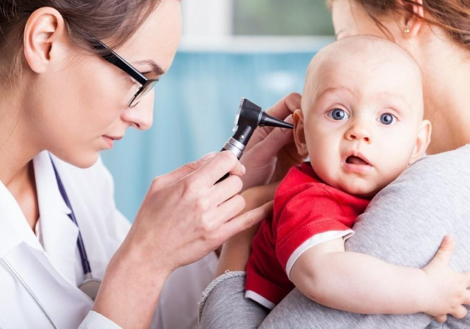

В нашем организме есть система, являющаяся неким заслоном для проникновения различных вредоносных микроорганизмов.
Любой инородный агент «сканируется» этой системой, и если она понимает, что этот агент может нанести вред,
специальные защитные клетки его уничтожают ещё в поверхностных слоях. Наибольшее сосредоточение таких клеток –
в лимфоидной ткани.
В чем причина?
Причин, из-за которых может появиться вышеописанная проблема, несколько. Первая и самая распространённая по
числу случаев – генетическая предрасположенность. Как правило, это связано с аномальным строением самой
лимфатической или эндокринной системы. Нередко наряду с аденоидами дети с такой наследственностью также
испытывают проблемы с нормальным функционированием щитовидной железы, что проявляется апатичностью, излишней
полнотой ребенка, вялостью.
Кроме того, на возникновение аденоидов может повлиять неправильное питание (как правило, перекармливание).
Также к заболеванию может привести ряд вирусов и инфекций, которые оказывают токсичное влияние на организм.
Распространённые детские инфекционные заболевания – корь, скарлатина, дифтерия – могут приводить к повторному
воспалению.
Как проявляется?
Вышеописанные симптомы аденоидов являются обобщёнными. Расскажем детально о признаках, которые могут сигнализировать
об этом заболевании.
Самый типичный признак – постоянная или часто проявляемая заложенность носа. Как следствие – во время сна у больного
почти всегда открыт рот, что приводит к частому храпу. Из-за нестабильного дыхания человек спит беспокойно, часто
двигается. Нередки также приступы удушья (это случается при западении корня языка). Такое состояние также может
приводить к частым кошмарам (это ярко проявляется у детей).
При сильно увеличенных в размерах аденоидах симптомы проявляются уже не только в виде дыхательной недостаточности.
Проблемы распространяются на другие органы. Так, может нарушиться фонация, что проявляется появлением гнусавости
в голосе (о причинах изменений голоса у ребёнка можно прочитать в
статье на нашем сайте).
Разросшиеся аденоиды могут быть причиной проблем со слухом: из-за из разрастания может закрываться часть слуховой
трубы. Аденоиды также приводят к застойной гиперемии находящихся вокруг мягких тканей в носовой, ротовой полостях.
Как результат – многократное усугубление проблем с дыханием, что, помимо прочего, может сопровождаться частыми
ринитами, нередко переходящими в хроническую стадию. Нередки и другие заболевания горла и гортани, лечение
которых осложнено.
Осложнением течения болезни является процесс воспаления аденоидов – аденоидит. Наиболее типичные проявление
воспаления – слабость, температура (симптомы, как при влиянии на организм любой другой инфекции). Но вот
последствия могут быть куда более серьёзными: в частности, это нетипичное развитие скелета лица. Эта проблема
может проявляться удлинением нижней челюсти, которая визуально выглядит более узкой, чем должна быть. Из-за того,
что нормально не формируется твёрдое нёбо, может быть нарушен прикус, что также негативно отражается на пропорциях
лица. В медицине даже есть такое понятие, как «аденоидный тип лица» - всегда полуоткрытый рот, клинообразная нижняя
часть, отсутствие эмоций, общий удручённый вид. При таких срочно нужна консультация детского ЛОРа.
ФАКТ
Неправильный механизм дыхания также приводит к крайне тяжёлым последствиям. Норма – когда человек дышит через
нос более глубоко, чем через рот. При аденоидах эта система сбивается: из-за перекрытия разросшейся тканью
человек преимущественно дышит ртом.
Как лечить?
После диагностики, которая позволяет точно поставить диагноз и определить степень разрастания ткани, детский
отоларинголог назначает лечение. Оно может быть консервативным (с использованием лекарственных препаратов,
физиопроцедур) и хирургическим.
При первом варианте лор-клиники в Москве могут назначить пациенту спреи и капли, которые будут снимать отёчности
и не допустят развития болезни в виде воспаления. Эффективно также назначение антигистаминных препаратов – для
купирования возможных аллергических реакций и опять же – уменьшения отека. В ряде случаев (но с особой
осторожностью) для снятия симптоматики в виде постоянной заложенности носа применяют сосудосуживающие спреи.
Однако такие препараты имеют серьёзный недостаток в виде быстрого привыкания. Нередки случаи, когда пациент
после продолжительного использования таких спреев или капель не может самостоятельно нормально дышать (без их
использования). Поэтому при назначении такого лечения, нужно строго соблюдать дозировку и период использования.
Поделиться:
138
Новые записи
СТАТЬЯ
Не худеть, не убиваться в спортзале и не бросать курить: лечащий врач Пелагеи, Би-2 и Бабкиной рассказал,
как звезды ухаживают за голосом
09
сентября2021
СТАТЬЯ
Не худеть, не убиваться в спортзале и не бросать курить: лечащий врач Пелагеи, Би-2 и Бабкиной рассказал,
как звезды ухаживают за голосом
09
сентября2021
СТАТЬЯ
Не худеть, не убиваться в спортзале и не бросать курить: лечащий врач Пелагеи, Би-2 и Бабкиной рассказал,
как звезды ухаживают за голосом


 +7 (495) 726-97-60
+7 (495) 726-97-60